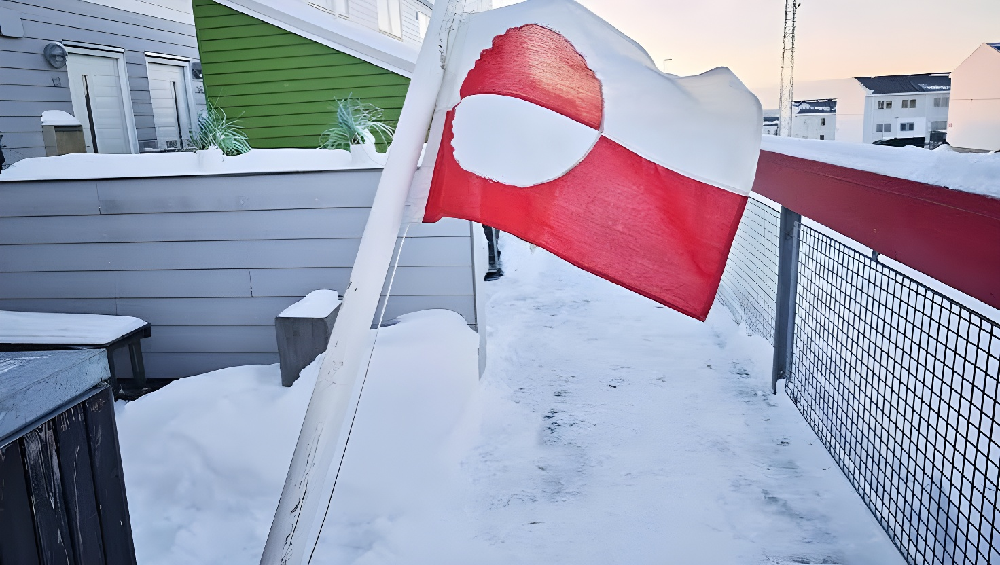

Après des mois de tensions ayant ébranlé les Européens, les États-Unis, le Danemark et le Groenland ont annoncé le 18 septembre 2026 un accord accordant à Washington un contrôle durable sur la sécurité de l'île arctique. Le texte doit être signé la semaine suivante à New York, en marge de l'Assemblée générale de l'ONU. Il maintient la souveraineté danoise mais ouvre la voie à une présence militaire américaine considérablement élargie.
Le vendredi 18 septembre 2026, Donald Trump annonce sur son réseau Truth Social qu'un accord a été trouvé avec le Danemark et le Groenland. Selon ses propres mots, ce texte « confère aux États-Unis un contrôle permanent sur la sécurité, ainsi que sur tous les autres besoins » du Groenland. D'après Copenhague, il doit être signé la semaine suivante à New York, en marge de l'Assemblée générale des Nations unies.
L'accord vise avant tout à écarter la Chine et la Russie du territoire arctique : il doit empêcher tout « adversaire » de Washington d'y établir une présence militaire ou d'y réaliser des investissements dans des secteurs sensibles, sans l'aval des États-Unis. Un responsable du département d'État, s'exprimant sous couvert d'anonymat, a précisé que le texte garantit qu'aucune des deux puissances ne pourra y disposer d'une base ni y envoyer de troupes.
L'accord met un terme, au moins temporairement, à une séquence diplomatique explosive. Au plus fort de la crise, Donald Trump avait évoqué la possibilité de recourir à la force pour s'emparer du territoire, inquiétant l'Union européenne et l'OTAN. La visite du vice-président JD Vance à la base de Pituffik, en mars 2025, avait déjà été perçue par Nuuk et Copenhague comme une provocation. En janvier 2026, le président américain affirmait encore vouloir obtenir la souveraineté sur les zones du Groenland hébergeant des bases américaines.
C'est la mise en place d'un groupe de travail réunissant le Danemark, le Groenland et les États-Unis qui a permis de désamorcer la crise et d'aboutir à l'accord du 18 septembre. Le Danemark a salué un texte « bon pour l'OTAN et l'Europe », tandis que le Groenland y voit une reconnaissance de ses intérêts propres.
« Le texte reconnaît la souveraineté et l'intégrité territoriale du Royaume et le droit du peuple groenlandais à l'autodétermination. »
— Mette Frederiksen, Première ministre du Danemark, 18 septembre 2026« Cet accord garantit la sécurité du Groenland et reconnaît nos intérêts. »
— Jens-Frederik Nielsen, Premier ministre du Groenland, 18 septembre 2026La présence militaire des États-Unis au Groenland ne date pas de 2026. Dès 1951, en pleine guerre froide, un accord de défense avec le Danemark accorde à Washington une quasi-carte blanche pour déployer des installations sur l'île, à condition d'en prévenir les autorités. Au plus fort de cette présence, les Américains ont compté jusqu'à 17 installations militaires sur le territoire. Un texte de 2004 est venu actualiser cet accord, consacrant la base de Pituffik (l'ex-Thulé) comme seule zone de défense américaine encore active, tout en laissant la possibilité d'en ouvrir de nouvelles sous réserve d'un accord entre les trois parties.
Selon plusieurs médias, dont le New York Times, Washington envisage désormais l'ouverture de trois nouvelles bases dans le sud du Groenland, en complément de Pituffik. Cette base, la plus septentrionale du dispositif américain, abrite un radar à balayage électronique capable de détecter des missiles balistiques et un système de défense antiaérienne, en plus de contribuer à la surveillance de l'espace. Le Groenland recèle par ailleurs d'importants gisements inexploités de terres rares, dont l'accès pourrait devenir plus aisé pour les intérêts américains à mesure que la fonte des glaces ouvre de nouvelles routes maritimes.
| Acteur | Position | Ce qu'il obtient |
|---|---|---|
| États-Unis | Contrôle sécuritaire renforcé | Bases élargies, exclusivité stratégique |
| Danemark | Souveraineté maintenue | Reconnaissance formelle de son autorité |
| Groenland | Autodétermination affirmée | Garantie de sécurité, intérêts pris en compte |
| Chine / Russie | Écartées du territoire | Aucune base, aucun investissement sensible |
Visite du vice-président JD Vance à la base de Pituffik, perçue à Nuuk et Copenhague comme une provocation en pleine crise diplomatique.
Donald Trump affirme vouloir obtenir la souveraineté américaine sur les zones du Groenland hébergeant des bases militaires des États-Unis.
Manifestation de centaines de Groenlandais à Nuuk contre la pression américaine, lors de l'inauguration des nouveaux locaux du consulat des États-Unis.
Donald Trump annonce sur Truth Social l'accord de « contrôle permanent » sur la sécurité du Groenland, conclu avec le Danemark et le Groenland.
Signature prévue du texte à New York, en marge de l'Assemblée générale de l'ONU, selon Copenhague.
Cet accord referme, sur le papier, la séquence la plus tendue des ambitions américaines sur le Groenland depuis le retour de Donald Trump à la Maison-Blanche : plus de menace d'annexion, une souveraineté danoise formellement reconnue, une autodétermination groenlandaise saluée par Nuuk. Mais derrière ce compromis diplomatique se dessine une réalité plus ambiguë : trois nouvelles bases annoncées, un droit de regard américain sur les investissements étrangers et un accord à la « durée de vie infinie », selon les mots mêmes de Trump. Le Groenland, dont les habitants avaient manifesté en mai contre une présence jugée envahissante, se retrouve ainsi davantage arrimé au dispositif de sécurité américain — au nom d'une rivalité avec la Chine et la Russie qui dépasse largement ses 57 000 habitants.